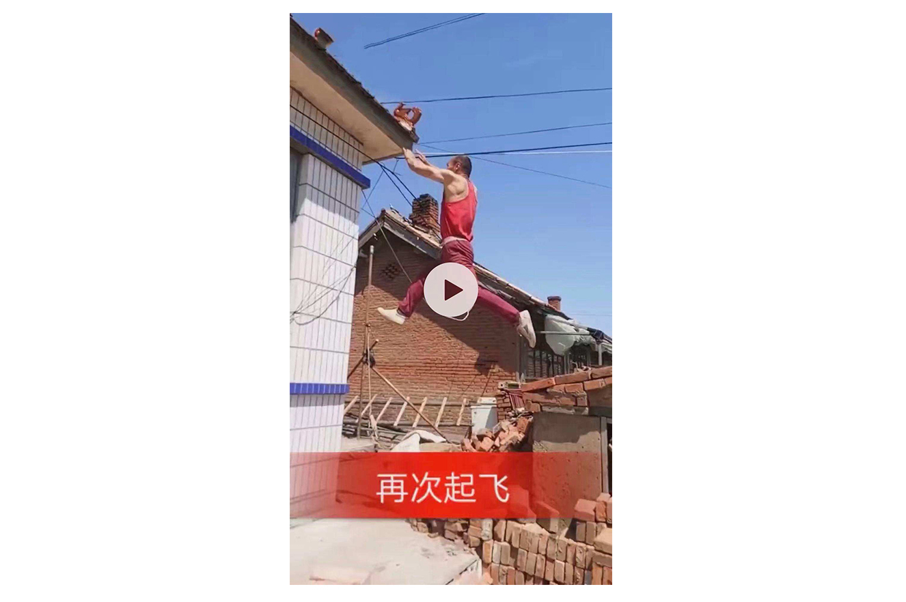
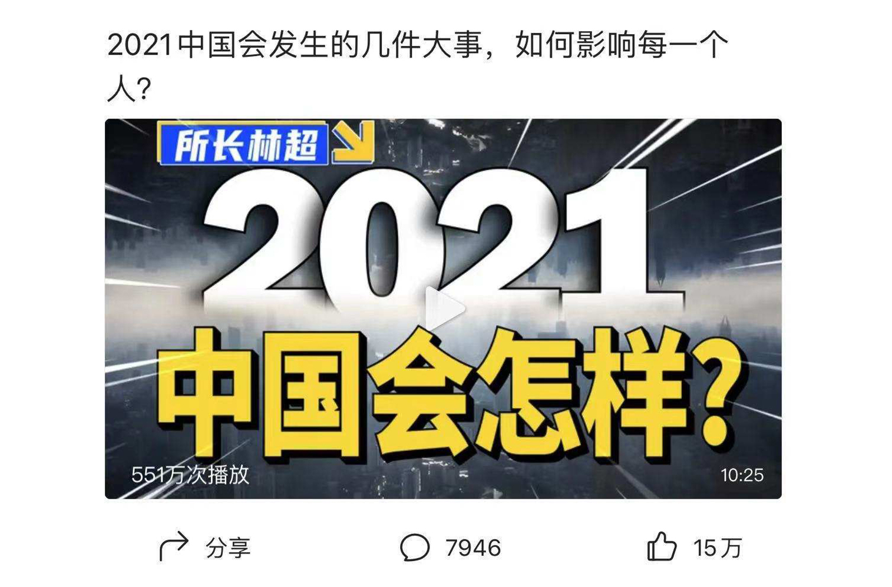
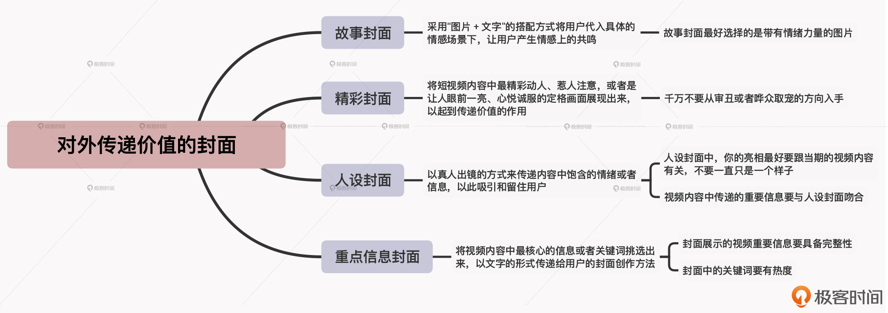

- 00 开篇词 短视频时代下，怎么把握好变现风口？.md
- 01 爆款短视频的底层逻辑：用心拍的短视频为啥没人看？.md
- 02 爆款短视频的底层逻辑：如何轻松打造自我特色？.md
- 03 精益创业法：如何快速跨过从0到1这道坎？.md
- 04 SWOT法：这么明显的个人优势你为啥就是看不到？.md
- 05 效用函数法：如何用量化的方式进行高效创作？.md
- 06 二次创新实验法：如何打造个人的差异化定位？.md
- 07 平台定位：如何选择最适合自己的创作平台？.md
- 08 如何快速找到各大短视频平台的正确切入点？.md
- 09 选题（上）：如何利用思考清单找到合适选题？.md
- 10 选题（下）：如何为不同的内容定制合适选题？.md
- 11 优劣分析法：如何快速筛选适合创作的视频素材？.md
- 12 标题（上）：如何利用微创新巧妙找到爆款标题？.md
- 13 标题（下）：如何用对号入座的方式抓住标题亮点？.md
- 14 视频封面（上）：如何快速抓住用户注意力？.md
- 15 视频封面（下）：如何传递最有价值的信息？.md
- 16 视频剪辑：如何轻松掌握视频化剪辑的三大公式？.md
- 17 效果反馈法：剪辑很容易，为什么你却一直学不会？.md
- 18 剪辑对比（上）：如何避开常见的短视频剪辑陷阱？.md
- 19 剪辑对比（下）：如何利用剪辑技巧提升视频质量？.md
- 20 拉片法：用电影创作的方式学习爆款短视频运营技巧.md
- 21 用户留存率：为什么粉丝很多但忠实拥趸却很少？.md
- 22 点赞率（上）：如何有效提升短视频的点赞量？.md
- 23 点赞率（下）：三种方法轻松提升用户对内容的认可度.md
- 24 上瘾机制：为什么视频观看量很高却没人留言？.md
- 25 避坑指南：为什么很多短视频账号中途做不下去了？.md
- 26 如何找到适合自己的短视频变现模式？.md
- 27 多元化变现：如何明确不同创作阶段的变现任务？.md
- 28 多内容变现：不同内容的主打变现模式是什么？.md
- 结束语 一切成大事者，都是终身学习者.md
15 视频封面（下）：如何传递最有价值的信息？
你好，我是周维。上节课，我们学习了四种能够快速抓住用户注意力的视频封面打造方法，包括悬念封面、效果封面、借力封面和猎奇封面。这节课，我们要学习的是如何通过视频封面来对外传递出内容中最有价值的信息。
在第2讲中，我说过一句话：所有短视频的本质其实就是在为用户提供价值。不管你创作的是搞笑类视频还是知识科普类视频，你都在对外传递价值，不过就是传递的价值种类不一样罢了。
所以，在视频封面的打造上，我们同样可以围绕“为用户提供价值”这一出发点去进行创作，让用户在看到封面后就能够有所收获。今天，我会给你介绍四种能传递价值信息的视频封面打造方法，包括故事封面、精彩封面、人设封面和重点信息封面。
下面我们就从故事封面开始，来一一学习下吧。
故事封面
所谓的故事封面，其实跟第13讲中的“故事式标题”的打造手法很相似，都是通过讲故事的方式来传递视频内容中的关键信息。不过这两者还是有一定的区别的，故事封面是通过画面去传递某个时刻的人物状态、内心描写等，它可以不像故事式标题一样，必须是波澜起伏、有转折的呈现，而是只要能把人物的经历或心理状态的画面定格下来就可以了。
这是因为在短视频创作中，以第一人称或第三人称的视角去表达的故事封面，会很容易让用户产生信服的心理，它能在瞬间调动用户的情绪，使之产生精神上的共鸣。
我给你举个例子。有一位Vlog博主，平常主要记录的是自己和妻子驾驶运输车走南闯北的生活经历。有一次，他拍摄了一条短视频，内容是自己连续开了很久的车有些累，想让妻子替自己开一会儿车，但是此刻妻子已经在后座上睡着了，他不忍心叫醒她，但是自己又坚持不住了。这条短视频，他就采用了故事封面，播放量没一会儿就突破了百万之多。
在封面上呈现出的是这样一幅画面：货车司机一副憔悴的样子，身后是熟睡的妻子。封面上写道：老婆，我撑不住了，起来开车吧。这样通过故事性的画面、文字表达，以及场景化的片段记录，就向用户传递出了在外奋斗不易的感受，让很多看到这条短视频的用户都想知道“视频的主人公到底发生了什么事情”，虽然悬念性不是很足，但是对外传递的情感非常真挚。
所以，对于故事封面而言，它的创作公式就是要通过图片+文字的方式，在封面中释放某种情绪（如感动、悲伤、热血、愤怒等），以此瞬间抓住用户的注意力，从而快速将用户带入到具体的场景中。
我再给你举个例子。由紫金山发布的这条“泉州塌陷酒店4岁姐姐和2岁弟弟相拥遇难，将孩子抱出后，消防员失声痛哭”视频的封面中，是一名消防员在低头哭泣。我看到这条短视频的时候，瞬间眼眶就湿润了，很多人看到之后也纷纷潸然泪下，有网友还评论道：我此时好像被万箭穿心，好心痛小宝贝，愿天堂没有灾难。这条短视频的点赞量超过了194万，评论也达到12万之多。
也就是说，当我们使用故事封面时，一定要传递出情感价值的力量，这样不但可以吸引用户的注意力，更可以将用户带入到一种特定的情境中，通过情绪力量的传递，促使用户点开视频内容。
这里我需要提醒你一下，并不是所有内容领域都适合采用故事封面。故事封面唤醒的大多是人感性的一面，它不是为了给用户提供解决方案，而是要呈现出一种可以让人感知的情感状态，更多传递的是一种情绪、情感，因而像知识科普类的内容其实并不合适采用故事封面。
精彩封面
我们再来说一下精彩封面。
精彩封面，就是指将短视频内容中最精彩动人、惹人注意，或者是让人眼前一亮、心悦诚服的定格画面展现出来，以起到传递价值的作用。
通常，精彩封面多出现在生活技能类、体育类等创作内容中。我举个例子，有个健身类的创作者，平时拍摄的短视频大多都是通过一些高难度的动作来完成一个体育项目，以此展示自己的肌肉力量。比如有一次，他为了展示自己的弹跳能力，从一堵墙跳跃到旁边的一个小房子，虽然时长不长，但是可以让用户感受到他不错的身体素质与协调能力。
那么对于这样的内容，如果在封面上只是通过文字信息来告诉用户自己的弹跳能力有多厉害，用户都无法感知到。但是如果采用了精彩封面，就可以通过跳跃在两个建筑物之间的一帧定格画面，来传递出内容的核心价值，就能更多地吸引浏览到这条短视频的用户去驻足观看。

其实，精彩封面之所以能够留住用户，最大的原因是能够让人产生佩服、新奇与震撼的心理作用，想要点开内容一探究竟。
所以，当你在创作精彩封面时，一定要选择那些能够让用户可望不可及的或者是出乎意料的画面作为卖点。但是，这也并不意味着你可以拿一张与内容没有半点关系、哗众取宠带有噱头的封面来吸引用户，这种单纯为了播放量而去做的行为，是每一个短视频平台都严厉打击的违规行为，一定要多多注意。
人设封面
好，我们接着再学习一下人设封面。
做短视频的人，对于“人设”这个词一定是熟得不能再熟，我们都知道人设对于打造个人IP来说非常重要，那么我们就可以将“人设”这个关键因素运用到视频封面的创作当中。
简单来说，人设封面就是指以真人出镜的方式来传递内容中饱含的情绪或者信息，以此吸引和留住用户。比如，一些汽车类的内容创作者采用的封面，大多都是自己出镜，然后搭配一款汽车作为传递价值信息的方式。
当然，为了让人设封面更加有趣味性，你还可以采用一些PS的手法来完善、升级，比如在B站上特别火的法律知识创作者罗翔教授主要就是采用人设封面的方式，他在“细数柯南中黑衣组织五大罪行”这期内容中，还刻意PS了自己的形象，将头像嫁接到黑衣人身上，显得有趣、生动，又能吸引更多的年轻用户观看。
不过，在使用人设封面时你还需要注意两点。
1. 人设封面中，你的亮相最好要跟当期的视频内容有关，不要一直只是一个样子。
你要知道，视频封面上的每一次露脸出镜，都是你塑造个人IP的一个关键步骤。所以最好不要每期视频你都是穿一样的衣服、用一种姿势，这样当用户浏览你的视频内容时，不会因为每个封面上的你都一样而失去新奇感和亲近感，从而更加有利于你的人设打造。
那么在我看来，最好的人设封面创作方式，就是要紧密结合视频内容，你可以在封面中表现出或悲、或喜、或愤怒、或紧张等表情或情绪，你越是在封面中真实地表达自己，就越会赢得用户的喜欢。
2. 人设封面的视频内容中，传递的重要信息要与封面吻合。
这一点，其实在前面的精彩封面中也有提到。人设封面要与内容保持统一，而不是封面中的关键信息在视频中完全没有体现。比如，刚才我们举例说到的汽车类创作者，如果这一期是要介绍一辆国产汽车，并搭配着自己的人像，但是视频内容中介绍的却是另外一台非国产汽车，这就是绝对的“文不对题”，是会受到平台的惩罚的。
重点信息封面
最后，我要给你介绍的就是重点信息封面。
重点信息封面，就是说把视频内容中最核心的信息或者关键词挑选出来，以文字的形式传递给用户的封面创作方法。这里的封面文字，你可以用醒目的颜色、字体来吸引用户的注意力，让用户可以快速明白其中的含义。
我给你举个例子。有一位财经类的视频博主，创作了一期“2021中国会发生的几件大事，如何影响每一个人？”的视频内容，他采用的就是重点信息封面，通过加大、标粗文字的醒目方式将重点信息“2021，中国会怎么样”传递出去，这样用户看到后就会联系到自己身上，然后迫切想知道未来会发生什么事情，从而就会点开视频在内容中寻找答案。

你看，通过这些重点文字信息的传递，你一下子就能明白这条视频内容的重点，这样只需要点开内容，你就能知道究竟发生了什么。同样，在使用重点信息封面时，你也需要注意技巧，主要有两点，下面我就结合例子给你介绍一下。
1. 封面展示的视频重要信息要具备完整性。
这句话是什么意思呢？就是说在重要信息封面中，不管是采用两段式还是三段式的文字解释，最后你呈现的一定要是一个完整的事件。比如，在前面的例子中，他的视频封面就对外传递了“什么时间”“具体地点”“结局如何”三个方面的信息，让用户第一时间就知道视频中最有价值的信息。
这里请注意，你一定不要采用悬念封面的方式去创作，因为如果采用悬念封面，你就必须在封面中营造悬念的氛围，而重点信息封面往往是因为没有太明显吸引人的画面，才会通过文字去传递内容价值。
2. 封面中的关键词要有热度。
这一点非常关键。在视频封面中出现的关键词，一定要是大家最近都很关注的人物、事件、数字、流行词等多种不同的元素，这样才能吸引用户的注意力，进而让用户停下来观看内容。
那我们要怎么确认选中的关键词就是热词呢？我教你几个方法，比如现在你选中了一个词，你就可以先在这个短视频平台上搜索一下，看看最近一星期之内，有多少爆款短视频用了这个词，如果数量不少，那就代表大家都很喜欢这个热词，系统也愿意推荐这个热词相关的视频内容，那你就可以选择。反之，如果搜索出来发现，虽然这个词有其他创作者在用，但是效果并不好，那么我建议你就不要用了。
还有，你也可以去百度热搜、微博热搜、今日头条热搜等第三方短视频数据统计平台上去搜索，这都可以查找到一个词的热度。
总而言之，在创作重点信息封面时，选择了热词，其实就能提高视频的播放、点赞等各项数据指标，也就能提高短视频成为爆款的几率。更重要的是，也可以帮自己的视频内容脱离因封面普通而无人问津的困境。
小结
这节课我们学习了四种可以对外传递价值的封面，分别是：
- 故事封面：就是采用“图片+文字”的搭配方式将用户代入具体的情感场景下，让用户产生情感上的共鸣。请注意，故事封面最好选择的是带有情绪力量的图片。
- 精彩封面：就是将内容中最惹人注意、或者让人眼前一亮的画面作为主打卖点，以此吸引用户的观看兴趣。请注意，千万不要从审丑或者哗众取宠的方向入手。
- 人设封面：就是通过真人出镜的方式作为主打，封面上要提供有热度的关键词，内容中要提供信息的完整性。
- 重点信息封面：就是将内容中最有价值或有亮点的信息以醒目的文字方式呈现出来，它可以作为标题的补充，以此快速让用户停留下来点开内容，寻找答案。
同样，你在使用这四种封面时，既要掌握每种封面的主要侧重点，更要注意每种封面的禁忌之处，以此熟练掌握每种封面的使用技巧。

思考题
请你从今天学习的四种封面中，选择一种视频封面的打造方法，并结合自己的内容领域，来思考一下具体的创作构想与展示出来的画面是什么吧。欢迎在留言区分享你的思考过程。
另外，如果你觉得有收获，也欢迎把今天的内容分享给更多的朋友。感谢你的阅读，我们下节课再见。
© 2019 - 2023 Liangliang Lee. Powered by gin and hexo-theme-book.